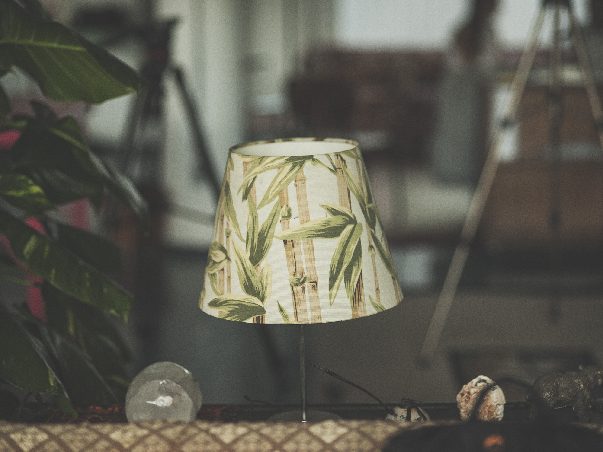
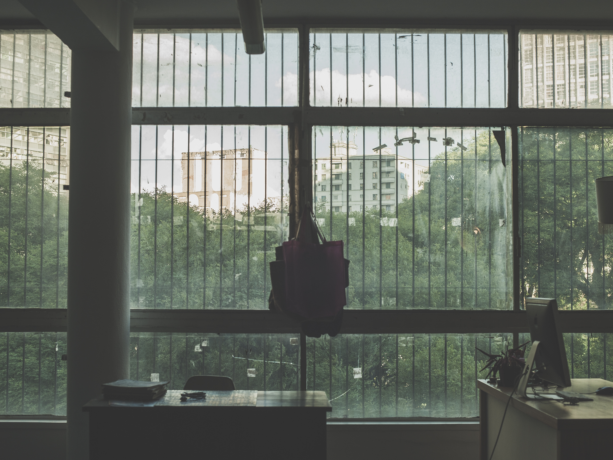
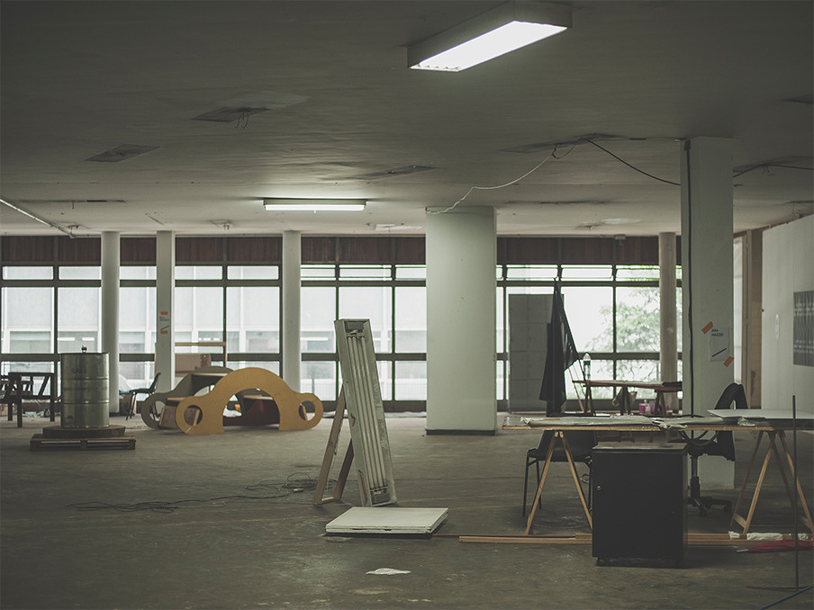
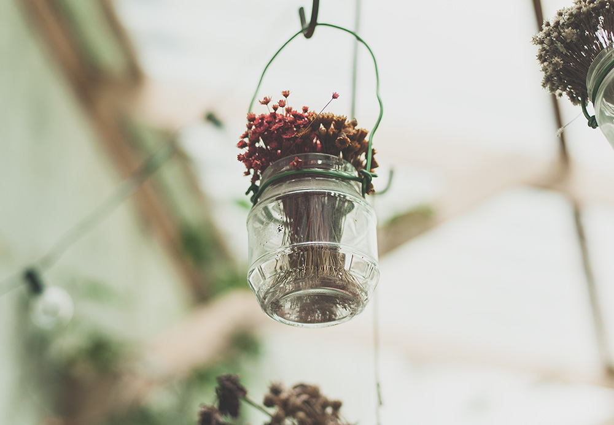

Durante décadas, o centro de São Paulo se esvaziou, com galerias, restaurantes, estúdios, bares e redações trocando a região por outros cantos da cidade. Mas essa situação começou a mudar nos últimos anos, quando uma série de projetos criativos voltaram a ocupar os bairros entre Sé e Luz, República e Liberdade. Construído ao longo de seis meses, este projeto funciona como registro desse movimento, dos criadores dessas iniciativas, dos lugares que inventaram e dos futuros que desenham para a região.




